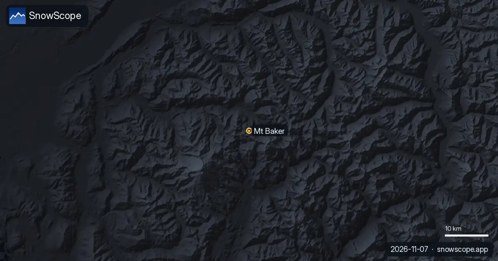

أرخص محطات التزحلق فأمريكا اللي فيهم التلج مضمون ف دجنبر 2026: مقارنة بين 16
رخيص والتلج مضمون، نادر ما كيجتمعو فنفس التيكي ف دجنبر. رتبنا 16 محطة أمريكية رخيصة بناء على رقم صادق من التاريخ ديالنا ديال التلج: النسبة ديال الشتوات اللي كان فيها 20 in (50 سم) ولا كثر فنص الجبل نهار 15 دجنبر، وقارناها بثمن التيكي ديال الكبار فالصفحة الرسمية ديال كل محطة.
شوف توقعات التلج مباشرة ديال US West فالتطبيق ديال SnowScopeالعلو ديال التلج، التنبيهات والخريطة 3D، فابور.الترتيب، من الأكثر أمانا للأكثر خطر
فالقمة، Grand Targhee كان عندها 20 in ولا كثر فنص الجبل نهار 15 دجنبر ف100 % من 46 شتوة ديالنا. من بعد كاين Mt. Baker (93 %)، Brighton (89 %)، White Pass وSnow King وBrundage (87 % لكل وحدة)، Lookout Pass وSchweitzer (85 %)، Montana Snowbowl (83 %) وTimberline (78 %).
النص الثاني ديال اللائحة هو فين دجنبر كيولي ماشي مضمون: Wolf Creek وSunlight (72 %)، Ski Cooper (70 %)، Loveland (67 %)، Beaver Mountain (57 %) وBridger Bowl (50 %). الأرقام فالخريطة كيتبعو هاد الترتيب.

النقطة المزيانة: مضمونة بزاف ورخيصة
خمس محطات كيجمعو بين فرص فوق 80 % وثمن متأكد منه تحت 80 $. Brundage كتبدا من 65 $ فبعض الأيام (87 %). White Pass كتبدا من 69 $ أونلاين فالأيام اللي فيهم ضغط قليل (87 %). Lookout Pass ثمنها 63 $ فوسط السيمانة بالحجز (85 %). Brighton كتبدا من 72 $ إلا شريتي بكري (89 %). Montana Snowbowl ثمنها 78 $ فوسط السيمانة (83 %).
تلاتة من هاد الأثمنة هوما أثمنة 'من' كيزيدو مع ما كيتباعو الأيام، فالحيلة هي بحالها فكلشي: ختار نهار ديال وسط السيمانة وحجز بكري.
التلج مضمون، ولكن كتخلصو فيه
Grand Targhee وMt. Baker هوما أكثر رهانين مضمونين فدجنبر فاللائحة ديالنا. التيكي أونلاين ديال Targhee بين 125 $ و180 $ حسب التاريخ. Mt. Baker كتبيع غير فعين المكان، 98.80 $ فالأيام العاديين و115.42 $ فأيام الضغط. Snow King، فJackson، كتبدا من 100 $، وتيكي النهار الكامل ديال Timberline هو 129 $ فالأيام العاديين، ولا 96 $ لعشية عادية. 3-Pack ديال Schweitzer ثمنها 249 $، اللي المحطة كتحسبها 83 $ فالنهار.
رخيص، ولكن خاصك الصبر
الأثمنة الأقل من بزاف كاينين فين التلج ماشي مضمون بزاف. Ski Cooper كتخلص 49 $ فوسط السيمانة. Loveland كتبيع تذاكر أونلاين ب60 $ حتى ل13 دجنبر، قبل ما الثمن فالشباك يطلع ل159 $. Sunlight كتبدا من 74 $، Beaver Mountain ثمنها ثابت 75 $، Bridger Bowl 86 $ أونلاين وWolf Creek 96 $ فالأيام العاديين.
هادو خيارات مزيانين لدجنبر إلا كانت التواريخ ديالك فيهم مرونة: النسبة ديال الشتوات اللي فيهم تلج مزيان كتزيد كل سيمانة من الشهر، ومعظم هاد المحطات كيكونو أكثر أمانا فعيد الميلاد منين ف15 دجنبر.
كيفاش تقرا هاد الأرقام
الأرقام ديالنا ديال التلج كيوصفو 46 شتوة اللي فاتو، من 1980-81 حتى 2025-26، ماشي توقع لهاد الشتوة. نص دجنبر عادي فنص الجبل كيتراوح بين 20 in (51 سم) فBridger Bowl و52 in (132 سم) فTimberline و46 in (118 سم) فGrand Targhee. الأثمنة تشافو فالصفحة الرسمية ديال كل محطة نهار 13 نونبر 2026؛ الأثمنة الدينامية غادي تبدل.
نصايح للي كيتزلجو
- حجز فوسط السيمانة: تقريبا كل المحطات فهاد اللائحة رخاص من الإثنين للخميس ولا الجمعة.
- إلا خاصك تتزحلق بداية دجنبر، ختار من فوق اللائحة؛ إلا قدرت تصبر لسيمانة عيد الميلاد، الجهة الرخيصة كتولي أكثر أمانا.
- شري أونلاين وبكري فين الأثمنة دينامية: الأثمنة 'من' كتبقى للي كيشريو بكري.
- شوف خريطة التلج فالسيمانة اللي قبل ما تسافر: دجنبر الضعيف يمكن يوقع فأي بلاصة.
المراجع والمصادر
- Grand Targhee, winter lift tickets 2026-27 (official) www.grandtarghee.com/tickets-passes/lift-tickets/winter-lift-tickets
- Mt. Baker Ski Area, daily lift tickets (official) www.mtbaker.us/tickets-and-passes/daily-lift-tickets/
- Brighton Resort, lift tickets 2026/27 (official) www.brightonresort.com/lift-tickets
- White Pass, online day tickets 2026/27 (official) skiwhitepass.com/online-day-ticket-sales
- Snow King Mountain, winter day tickets (official store) store.snowkingmountain.com/en/catalogue/category/500-winter-lift-tickets/510-day-ticket_447/
- Brundage Mountain, daily lift tickets (official) brundage.com/daily-lift-tickets/
- Lookout Pass, lift tickets 2026-2027 (official) skilookout.com/lift-tickets/
- Schweitzer, lift ticket 3-Pack 2026/2027 (official) www.schweitzer.com/plan-your-trip/deals-and-packages/lift-ticket-3pack
- Montana Snowbowl, lift tickets 2026/27 (official) montanasnowbowl.com/sbblog/lift-tickets/
- Timberline Lodge, winter lift tickets 2026/2027 (official) www.timberlinelodge.com/activities/winter/lift-tickets/
- Wolf Creek Ski Area, tickets and passes 2026-2027 (official) wolfcreekski.com/tickets-passes/
- Sunlight Mountain Resort, lift tickets (official) sunlightmtn.com/lift-tickets/
- Ski Cooper, day pass 2026-27 (official) www.skicooper.com/cooper-day-pass/
- Loveland Ski Area, lift tickets 2026-27 (official) skiloveland.com/lift-tickets/
- Beaver Mountain, tickets and passes 2026-2027 (official) www.skithebeav.com/tickets-and-passes/
- Bridger Bowl, lift ticket pricing 2026/27 (official) bridgerbowl.com/tickets-passes/lift-tickets
- OpenSkiMap (mapped lifts and runs) openskimap.org/
على هاد الأرقام
أرقام التلج: التاريخ ديال التلج ديال SnowScope، 46 شتوة اللي فاتت (1980-81 حتى ل 2025-26) فالعلوات المكتوبة (التحت، الوسط، الفوق)، إعادة بناء ديال التلج اللي فات لمنطقة مصححة بالعلو (على أساس ERA5-Land؛ Snow_Hydro 1 كم للمغرب)، ماشي البلاغات ديال المحطة. التلج دابا: الخريطة ديال SnowScope. التيليسييجات والبيستات والعلوات: الخرايط ديال OpenSkiMap. الأثمنة: الصفحات الرسمية اللي لتحت، متشافة نهار 13 نونبر 2026؛ الأثمنة الدينامية كتبدل مع التاريخ والطلب.
كيفاش تستاشهد بهاد المقال
للبحث، التعليم ولا الصحافة: الأرقام والرسومات تقدر تعاود تخدم بيهم بحرية تحت CC BY 4.0 مع هاد الاستشهاد.
SnowScope (2026), أرخص محطات التزحلق فأمريكا اللي فيهم التلج مضمون ف دجنبر 2026: مقارنة بين 16, https://snowscope.app/blog/ar/2026/11/cheapest-snow-sure-us-ski-areas-december-2026.html, تشاف ف 2026-11-14
SnowScope (Atlas Labs). (2026, November 14). أرخص محطات التزحلق فأمريكا اللي فيهم التلج مضمون ف دجنبر 2026: مقارنة بين 16. SnowScope snow reports. https://snowscope.app/blog/ar/2026/11/cheapest-snow-sure-us-ski-areas-december-2026.html
BibTeX
@misc{snowscope2026cheapestsnowsureusskiare,
author = {{SnowScope (Atlas Labs)}},
title = {أرخص محطات التزحلق فأمريكا اللي فيهم التلج مضمون ف دجنبر 2026: مقارنة بين 16},
year = {2026},
month = nov,
howpublished = {\url{https://snowscope.app/blog/ar/2026/11/cheapest-snow-sure-us-ski-areas-december-2026.html}},
note = {Published 2026-11-14 14:47 UTC; accessed 2026-11-14}
}· CC BY 4.0 · الطريقة، الداتا والأدوات →
تابع US West
فابور: ميساج ملي يجي التلج، والتوقعات كل صباح.
تقارير أخرى ديال التلج

Mt Baker، Washington: تقريبا 133 in (337 cm) فالقمة العادية فالوسط ف 46 شتوة اللي فاتو، رقم قياسي عالمي ديال التلج، وماكاينش فين تبات فالجبل.

واش كاين تلج أكثر من هادي عام؟ قارنّا اليوم مع 11 نونبر ديال الشتا اللي فاتت ف 4 محطات فغرب ميريكان: 4 منهم فيهم تلج أكثر دابا، حسب الموديل ديال …

واش هادي بداية مزيانة ديال الشتا فغرب ميريكان؟ 5 محطات فغرب ميريكان، 46 ديال الشتوات اللي فاتو، تاريخ واحد: ها كيفاش كيتقارن اليوم. فوق العادي بوضوح: …